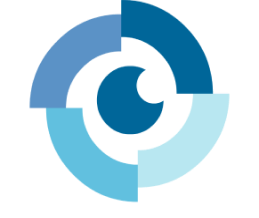

Curiosidades
FUNDAÇÃO
A Associação dos Deficientes Visuais de Brusque e Região foi fundada em 10 de junho de 2002.
ATIVIDADE
Ensino do método Braille, mobilidade, cursos, palestras e informações relevantes.
PARTICIPAÇÃO
Criação de leis, como: Estatuto do Direito das pessoas com deficiência.
OBJETIVO
Aprimorar a qualidade de vida das pessoas com deficiências visuais por meio de iniciativas que envolvem assistência social, cultura e direitos humanos.
SUPORTE
A instituição procura sempre dar suporte abrangente para pessoas com deficiências visuais.
INCLUSÃO
A inclusão equitativa de pessoas com deficiência visual em todas as esferas da sociedade, como a inserção no mercado de trabalho.
Ferramentas
DOSVOX
Executar diversas tarefas no computador através da fala.
VIRTUAL VISION
Programa que visa trazer a acessibilidade para o mundo digital e o mercado de trabalho.
NVDA
Leitor de tela grátis, responsável por ler cada detalhe da tela do computador.
FUSION
Utilizado em conjunto com o ZoomText e o JAWS, permitindo navegação na web e fala flexível e de alta qualidade.
ZOOMTEXT
Permite a ampliação e melhoria visual de telas.
JAWS
Programa responsável pela leitura de telas de forma rápida.
Reconhecimento de Cores em Tempo Real
Desenvolvido por alunos da UNIFEBE